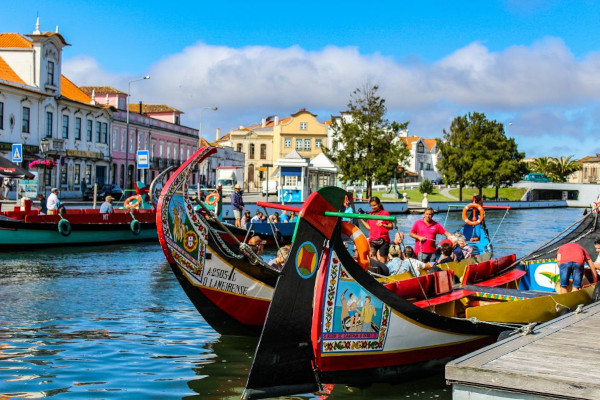
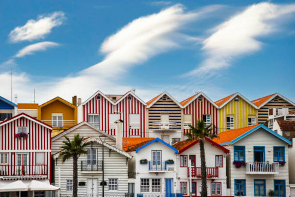

Histoire et Patrimoine
Aveiro, surnommée la "Venise du Portugal" en raison de ses canaux pittoresques, possède une riche histoire maritime. Fondée au XVe siècle, la ville était autrefois un important port de pêche et de commerce de sel. Son centre historique regorge de bâtiments anciens, dont la cathédrale de São Domingos et le couvent de Jésus, témoins de son passé glorieux. Les visiteurs peuvent également découvrir les traditions séculaires de la ville en visitant le musée de la ville d'Aveiro et en explorant les salines de Rio Maior.
Culture et Arts
Aveiro est un centre culturel animé, avec une scène artistique florissante qui attire les amateurs d'art du monde entier. Les musées de la ville, tels que le musée de la ville d'Aveiro et le musée de la céramique, abritent une collection impressionnante d'œuvres d'art et d'artefacts historiques. Les théâtres locaux proposent une programmation variée de pièces de théâtre, de concerts et de spectacles de danse, tandis que les galeries d'art exposent les œuvres d'artistes locaux et internationaux.
Attractions Touristiques
Aveiro est une destination touristique prisée, offrant une multitude d'attractions pour les visiteurs de tous âges. Les canaux de la ville, bordés de maisons colorées et de bateaux traditionnels appelés "moliceiros", sont parfaits pour une promenade romantique ou une excursion en bateau. Le quartier historique de Beira-Mar, avec ses ruelles pavées et ses églises anciennes, est idéal pour une balade tranquille à la découverte de l'architecture locale. Les plages de sable doré de la Costa Nova, avec leurs maisons rayées emblématiques, sont un lieu de détente populaire pour les habitants et les touristes.
Cuisine et Gastronomie
La cuisine d'Aveiro est une célébration des saveurs de la mer, avec une abondance de fruits de mer frais et de plats traditionnels à base de poisson. Les spécialités locales incluent le "caldeirada de peixe", un ragoût de poisson savoureux, et les "ovos moles", des pâtisseries sucrées en forme de coquillages, faites avec des jaunes d'œufs et du sucre. Les restaurants de la ville proposent également une variété de plats régionaux, tels que la "chanfana", un plat de viande de chèvre mijotée dans du vin rouge, et le "leitão", du porcelet rôti croustillant.
Loisirs et Divertissements
Aveiro offre une multitude d'options de loisirs et de divertissements pour tous les goûts. Les visiteurs peuvent profiter des plages de sable doré de la Costa Nova pour se détendre au soleil ou pratiquer des sports nautiques tels que le surf, le kayak et la voile. Le parc Infante Dom Pedro, avec ses jardins verdoyants et ses sentiers de promenade, est idéal pour une balade en famille ou une séance de pique-nique. Les bars et les cafés de la ville proposent une variété de boissons rafraîchissantes, de collations et de plats locaux, parfaits pour se détendre après une journée bien remplie de visites touristiques.
